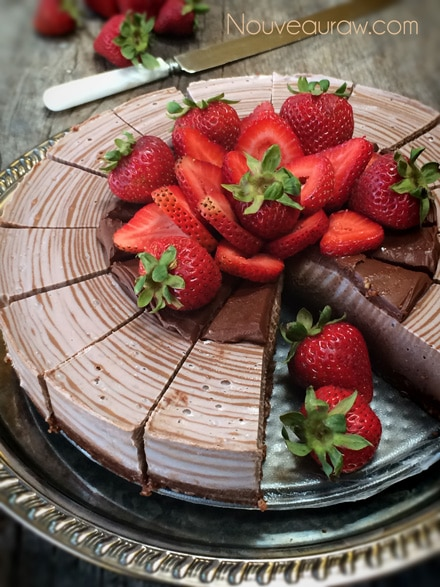
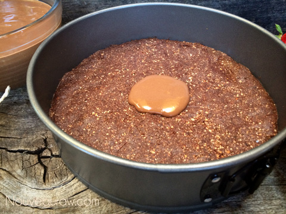
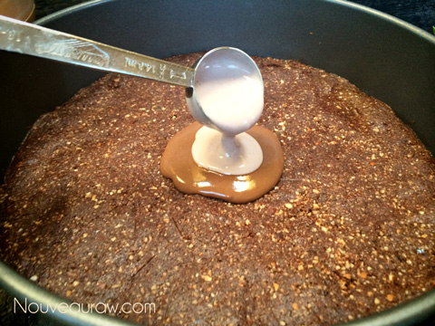
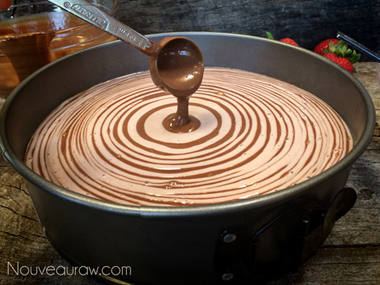

Chocolate and Strawberry Zebra Cheesecake
I love making cheesecakes this way… it is called the zebra technique, but to me, it reminds me more of tree rings. Maybe I will refer to it as the dendrochronology technique. Sounds fancy-schmancy, doesn’t it? I am not one to normally throw around big words, mostly because I usually can’t pronounce them, so we can also call it, tree-ring dating. Ah, much easier. :) It is the scientific method of dating the age of a tree, based on the analysis of patterns of tree rings, also known as growth rings. It can date the time at which tree rings were formed, in many types of wood, to the exact calendar year. Fascinating! So, if we were to count the rings on this cheesecake, it is safe to say that it is 80 yrs old! :)
I learned something through making this recipe.. typically after I pour the batter into the pan, I gently tap the pan on the countertop to bring up any bubbles that may have formed in the batter through the blender processing. After I had a dozen rings of alternating batter in the pan, I noticed a few bubbles. My immediate response is to grab the pan and start tapping. But, I had to stop myself. I didn’t want the batter to flatten out; I want gravity to form the rings… so I ended up with a few bubbles in the finished product. So, next time, I will tap the batter while it is in the bowl before I start the ring process. That ought to help prevent the little breath holes. hehe
I hope that you enjoy making this cake. Don’t feel intimidated or nervous about this technique… it is straightforward and if I can do it… so can YOU! Enjoy!

Ingredients:
yields 9″ Springform pan
Crust:
Base batter: yields 5 cups
- 3 cups cashews, soaked 2+ hours
- 1 1/2 cups almond milk
- 3/4 cup maple syrup
- 1 Tbsp fresh lemon juice
- 1 Tbsp vanilla extract
- 1 tsp probiotic powder
- 1/4 tsp sea salt
Strawberry batter:
- 2 1/2 cups base batter, from above
- 1 cup organic strawberries
- 1/2 cup coconut oil, melted
- 2 Tbsp sunflower lecithin
Chocolate batter:
- 2 1/2 cups base batter, from above
- 1/2 cup raw cacao powder
- 1/2 cup coconut oil, melted
- 2 Tbsp maple syrup
- 2 Tbsp sunflower lecithin
Decoration:
Preparation:
Crust:
- Place the Medjool dates in enough hot water to cover them. Set aside. This will add more moisture to them, so they blend well into the crust mixture.
- In a food processor, fitted with an “S” blade, combine the almonds and walnuts. Process until they break down to small crumbles.
- Add cacao powder, salt, and pulse together.
- Drain the soak water out of the dates and squeeze out the excess water.
- Open the food processor and place the dates all around the bowl. Replace the lid and process until the crust mixture starts to stick together. When you pinch the batter, it should stick together. If it is too dry, you can add 1 Tbsp of water at a time till it holds together.
- Scatter the crust batter around the bottom of the Springform pan evenly. Then start pressing it down firmly and evenly. Clean up the edge of the crust, as this will be seen when the pan ring is removed. Set aside while you make the filling.
Batter / filling:
- After soaking the cashews, drain and rinse then add to the blender along with the almond milk, agave, lemon juice, probiotic powder, vanilla, and salt. Process until creamy, can take 2-5 minutes, depending on your machine. Once this is creamy and smooth, remove 2 cups of the filling.
- Strawberry batter:
- Add to the 2 cups of batter, the strawberries, coconut oil, and lecithin. Blend until creamy. Pour into a small bowl. Rinse the blender container.
- Chocolate batter:
- Add the remaining 2 cups of batter and combine with the cacao powder, coconut oil, agave, and lecithin. Blend until creamy. Pour in a small bowl.
Assembly:
- Place in front of you; pie crust, both bowls of batter (pinkish and brown), with a tablespoon measure in each bowl. Sit down and relax through this process.
- Start with 1 tablespoon of chocolate filling and place it in the center of the crust. Don’t spread it out; just let it pour out of the measuring spoon.
- Next, scoop up 1 tablespoon of the strawberry batter and pour it into the center of the brown filling that is in the pie crust.
- Now, alternate 1 tablespoon at a time until all of both batters are gone. Don’t tap the pan during the process; just let gravity do all the work.
- If you do not want as many rings just use a larger amount of batter for each ring ( 2 Tbsp, 1/4 cup, etc.)
- Finally, cover with plastic and place in the fridge overnight to firm or in the freezer for at least 6 hours.
- Remove and decorate. This pie will keep for 3-5 days in the fridge or safely 1 month in the freezer. Keep well covered.
Tips:
- Lecithin – You can use any type of lecithin that fits your dietary needs. Whether that be soy or sunflower based, if you purchase soy-based, please make sure that it is non-GMO. Use the same measurement, whether you use liquid or powdered lecithin. You can make the cake without the lecithin, but it might come out much softer, so keep it stored in the fridge or freezer until ready to enjoy.
- Nuts used in the crust – You can use any nut or go nut less if needed. You can use shredded coconut, oats, or buckwheat in its place.
- Soften the coconut oil by placing the jar of oil in a bowl with hot water. It will take about 15 minutes for it to melt.
- Almond milk – You can use coconut milk in its place.




© AmieSue.com